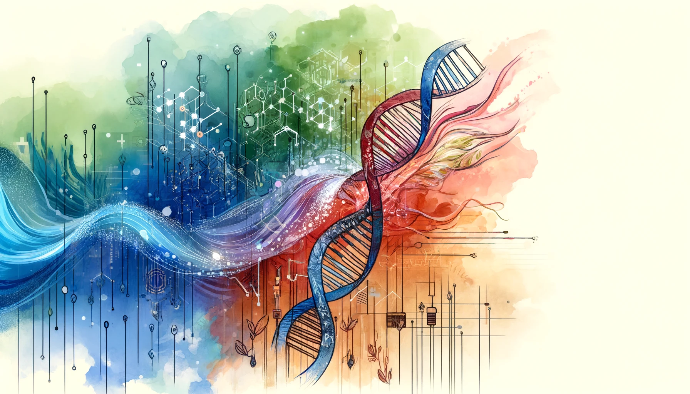
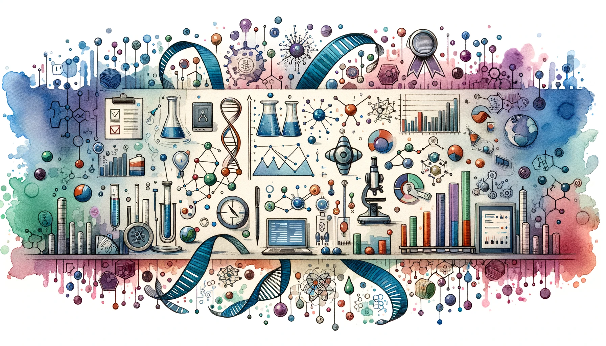

written by Eric J. Ma on 2024-05-27 | tags: deep learning multi-modal learning data fusion protein sequences biomedical texts gradient descent semantic alignment masked language modelling model architecture embedding conversion
In this blog post, I explore multi-modality deep learning based on two papers from the biomedical world, in which we explore the definition of data modalities, what fusion is and how it takes place within a model, and possible training objectives. In this post, I also considers how to utilize these models with only one input modality available, highlighting the potential for protein function prediction and sequence generation. How can multi-modal deep learning transform our approach to complex data analysis?
Read on... (2118 words, approximately 11 minutes reading time)written by Eric J. Ma on 2024-05-16 | tags: pymol jupyter notebooks python scripting protein visualization pdb files data science gpt-4 matplotlib plotting bioinformatics automation
In this blog post, I share my journey of learning to script PyMOL directly from Jupyter notebooks, a skill I picked up with the help of GPT-4. I detail the process of installing PyMOL, setting up the environment, and scripting to process and visualize protein structures, specifically nanobody VHH structures. I also demonstrate how to plot these structures in a grid using `matplotlib`. But the more important lesson here is how quickly I was able to pick it up, thanks to GPT-4! Are you able to leverage LLMs as a skill-learning hack?
Read on... (661 words, approximately 4 minutes reading time)written by Eric J. Ma on 2024-05-12 | tags: crispr-cas protein language models genomic data machine learning bioinformatics sequence generation protein engineering gene editing dataset curation computational biology data science generative model generative artificial intelligence
In this blog post, I do a deep dive into a fascinating paper on designing CRISPR-Cas sequences using machine learning. The authors develop a generative model to produce novel protein sequences, validated in the lab, aiming to circumvent intellectual property restrictions. They curate a vast dataset, the CRISPR-Cas Atlas, and employ various models and filters to ensure sequence viability. My review highlights the methodology, emphasizing the importance of filtering and the challenges of using 'magic numbers' without justification. How many sequences are enough to train a generative model, and what makes laboratory experiments faster? Curious to find out more?
Read on... (3082 words, approximately 16 minutes reading time)written by Eric J. Ma on 2024-05-05 | tags: data science biotech team management tutorial odsc east mission statement problem solving value delivery hiring challenges leadership
In this blog post, I share discussion insights from a hands-off tutorial I led at ODSC East on setting up a successful data science team within a biotech research organization. We explored formulating a mission, identifying problem classes, articulating value, and addressing challenges. I used my experience at Moderna to illustrate points, emphasizing the unique aspects of biotech data science. Despite not covering all topics due to time constraints, the discussion was enlightening, highlighting the contrast between biotech and other industries. How can these insights apply to your organization's data science team?
Read on... (2929 words, approximately 15 minutes reading time)written by Eric J. Ma on 2024-04-17 | tags: bioit world conference data science llms software development productivity tools ai training code completion debugging documentation commit messages

In this blog post, I share insights from my talk at the BioIT World conference in 2024, focusing on how LLMs empower data scientists and the necessity of software development skills in data science. I discuss practical applications of LLMs, such as code completion, documentation, debugging, and learning new domains, highlighting their role in enhancing productivity and efficiency. LLMs not only automate mundane tasks but also facilitate rapid knowledge acquisition, proving to be invaluable tools for data science teams. How could LLMs transform your data science work?
Read on... (2173 words, approximately 11 minutes reading time)written by Eric J. Ma on 2024-04-09 | tags: pre-commit webp optimization python
In this blog post, I share my journey of creating my first distributable pre-commit hook, `convert-to-webp`, using the pre-commit framework. This hook automatically converts images to the `.webp` format before they're committed to a repository, ensuring optimized image storage. I detail the essential configuration files, the creation of a Typer CLI for the hook, and how to make the hook available for others by tagging versions and adding it to a project's .pre-commit-config.yaml file. Curious about how to streamline your codebase with automated checks? How might this improve your project's efficiency?
Read on... (907 words, approximately 5 minutes reading time)written by Eric J. Ma on 2024-04-07 | tags: pyds-cli data science standards cookiecutter templates github actions
In this blog post, I share the latest updates to `pyds-cli`, including the use of `cookiecutter` templates for easy repo scaffolding and a new talks initializer for creating talk presentations using `reveal-md`. These updates simplify the CLI and offer a streamlined approach to project and talk setup, reflecting my commitment to promoting best practices among data scientists. With these tools, I aim to make it easier for data scientists to adopt standardized project structures. Curious about how these updates can enhance your workflow?
Read on... (887 words, approximately 5 minutes reading time)written by Eric J. Ma on 2024-04-05 | tags: data science data science team software development upskilling tooling environment productivity
In this blog post, I share insights from my 7 years in the industry on how to enhance a data science team's software development skills, focusing on the necessity of tooling and practices that make it easy and normal to do the right thing: moving from notebook explorations to production-ready code. I also discuss the importance of community practices in fostering a culture of quality software development within data science teams. How can these strategies streamline your team's workflow and elevate their software development capabilities?
Read on... (2402 words, approximately 13 minutes reading time)written by Eric J. Ma on 2024-03-24 | tags: llamabot querybot refactor chromadb lancedb vector database hybrid search chatui mixin panel llamabot repo chat litellm contributions open source
In this blog post, I share the latest updates of LlamaBot 0.4.0, highlighting the decoupling of document storage from text generation in QueryBot, the introduction of the ChatUIMixin for easy web UI integration, and the switch to LanceDB for its lightweight, SQLite-like handling of vectors. I also touch on enhancements to repo chat, making it simpler to launch web-based chatbots on repository content. If you're a llamabot user, I'd love to hear from you about how well it works for you!
Read on... (1258 words, approximately 7 minutes reading time)written by Eric J. Ma on 2024-03-23 | tags: data science organization motivation research biotech team activities product-oriented service-oriented career development

In this blog post, I discuss about organizing and motivating a data science team within a biotech research setting, focusing on structuring team activities around key research entities and methodologies. I highlight the importance of aligning team members with projects that match their interests and professional goals, and suggest ways to foster leadership skills without formal management roles. How do we balance the technical and career aspirations of data scientists to maintain productivity and motivation?
Read on... (1296 words, approximately 7 minutes reading time)